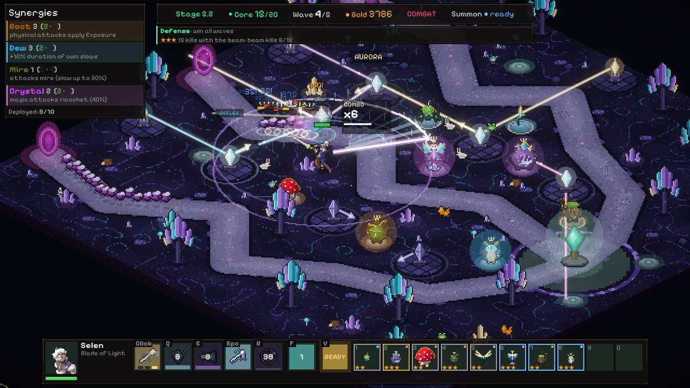
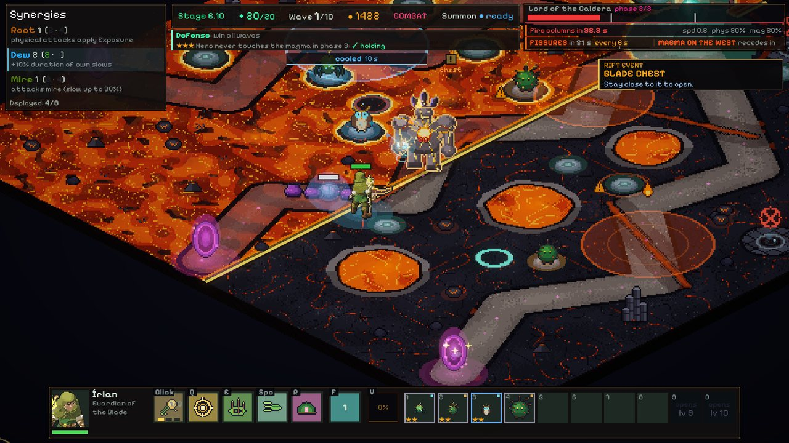
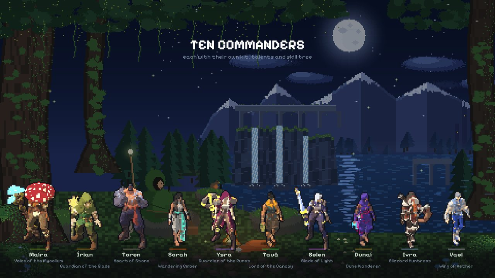
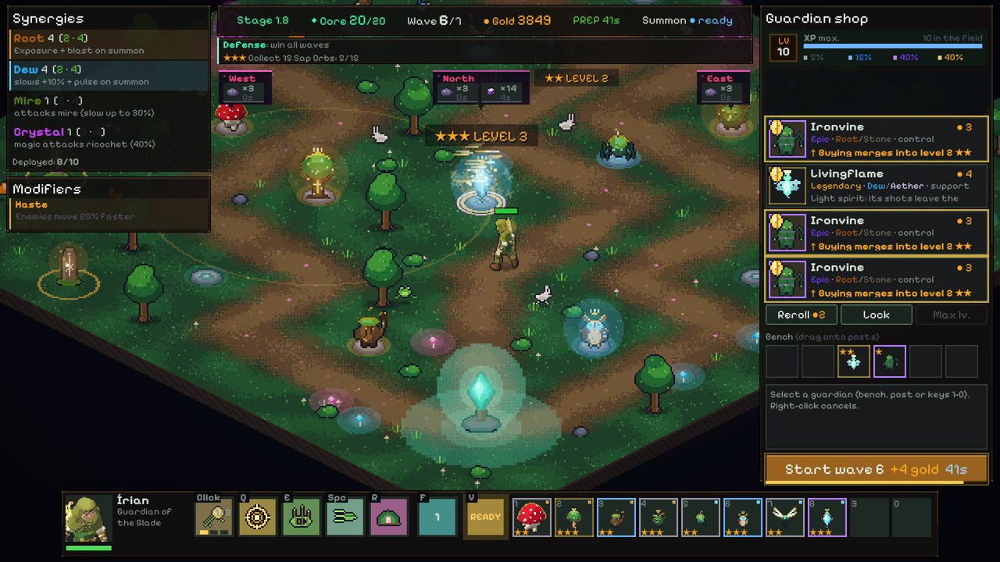

Rift Guardians
Defend the core with a commander you control and a warband of guardians you build, merge and summon to fight by your side.
Download for Windows — free How to play

What the game is
- Tower defense with a hero. You walk the map with your commander, attack, use abilities and decide where each guardian stands.
- Warband, shop and merging. Between waves, buy guardians, keep them in reserve and merge identical copies to level them up.
- Summoning. A guardian can leave its post for a while to fight next to the commander.
- A big campaign, playable offline. 10 maps, 100 stages and 10 bosses, each map with its own mechanic, plus a harder Heroic mode.
- Actually free. No purchases with real money, no ads. In-game currencies are only earned by playing.








Requirements
| System | Windows 10 or 11, 64-bit |
|---|---|
| Processor | to be measured |
| Memory | to be measured |
| Graphics | to be measured |
| Disk space | about 520 MB free (measured on the development build; to be confirmed with the installer) |
| Internet | Not required for the campaign. Online modes need an internet connection; PvP uses UDP port 7778. |
Minimum requirements are still being measured on test machines. Anything shown as "to be measured" will be filled in before launch.
Before you download
- Windows shows a blue warning the first time you open the game, because it has no paid digital signature. See what it is and how to continue.
- The online account is created on your computer, with no e-mail and no password. Read the Privacy Policy and the Terms of Use.
- Questions and problems: Support. Community: Discord.